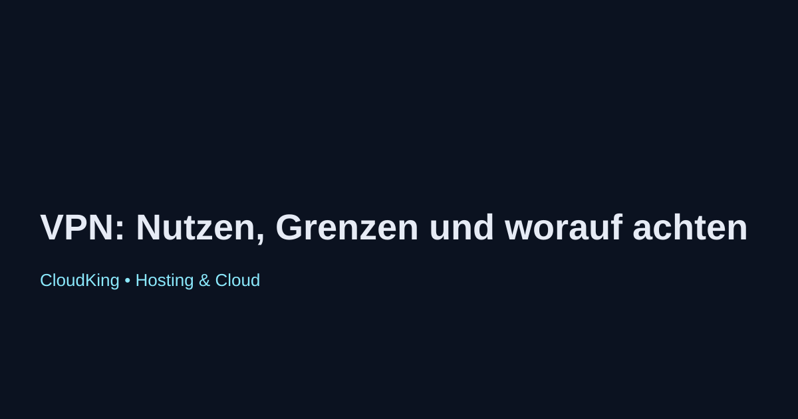

VPN: Nutzen, Grenzen und worauf achten
Ein Virtual Private Network (VPN) ist ein Werkzeug, das es Nutzern ermöglicht, sicher und anonym im Internet zu surfen. Es verschlüsselt die Internetverbindung und schützt somit die Privatsphäre der Nutzer.
Nutzen von VPNs
- Sicherheit: VPNs bieten eine zusätzliche Sicherheitsebene, insbesondere bei der Nutzung öffentlicher WLAN-Netzwerke.
- Anonymität: Die IP-Adresse des Nutzers wird maskiert, was die Rückverfolgbarkeit erschwert.
- Geoblocking umgehen: Nutzer können auf Inhalte zugreifen, die in ihrem Land möglicherweise gesperrt sind, indem sie sich mit einem Server in einem anderen Land verbinden.
Grenzen von VPNs
- Geschwindigkeit: Die Nutzung eines VPN kann die Internetgeschwindigkeit beeinträchtigen, da die Daten durch zusätzliche Server geleitet werden.
- Rechtliche Aspekte: In einigen Ländern ist die Nutzung von VPNs eingeschränkt oder sogar illegal.
- Vertrauen in den Anbieter: Nutzer müssen darauf vertrauen, dass der VPN-Anbieter ihre Daten nicht speichert oder missbraucht.
Worauf achten bei der Auswahl eines VPN-Dienstes
- Datenschutzrichtlinien: Prüfen Sie, ob der Anbieter eine klare und transparente Datenschutzrichtlinie hat.
- Serverstandorte: Achten Sie darauf, dass der Anbieter Server in den gewünschten Ländern hat.
- Geschwindigkeits- und Leistungstests: Informieren Sie sich über die Geschwindigkeit und Zuverlässigkeit des Dienstes durch unabhängige Tests.
- Support und Benutzerfreundlichkeit: Ein guter Kundenservice und eine benutzerfreundliche Oberfläche sind entscheidend für eine positive Nutzererfahrung.
Fazit
VPNs bieten viele Vorteile in Bezug auf Sicherheit und Privatsphäre, jedoch sollten Nutzer auch die Grenzen und Risiken berücksichtigen. Eine sorgfältige Auswahl des Anbieters ist entscheidend, um die gewünschten Ergebnisse zu erzielen.